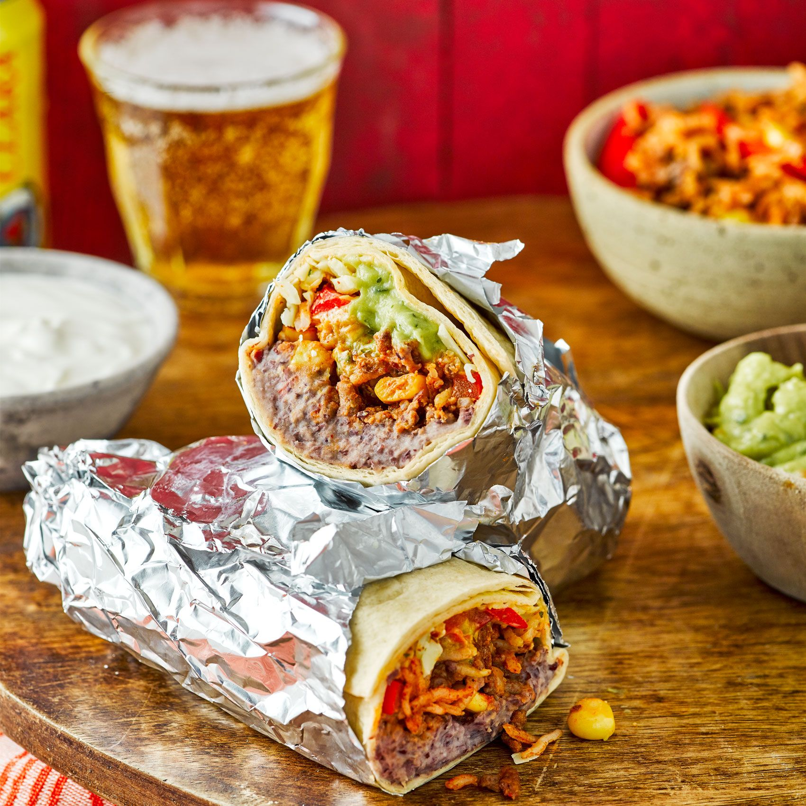
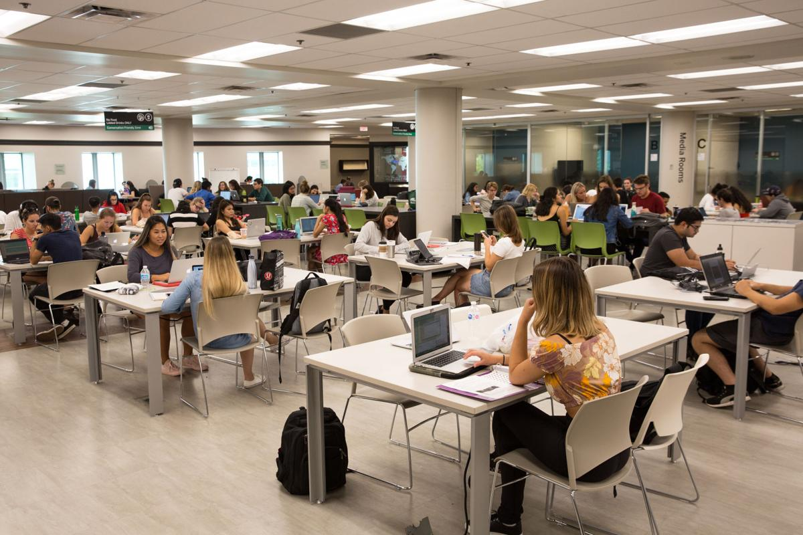
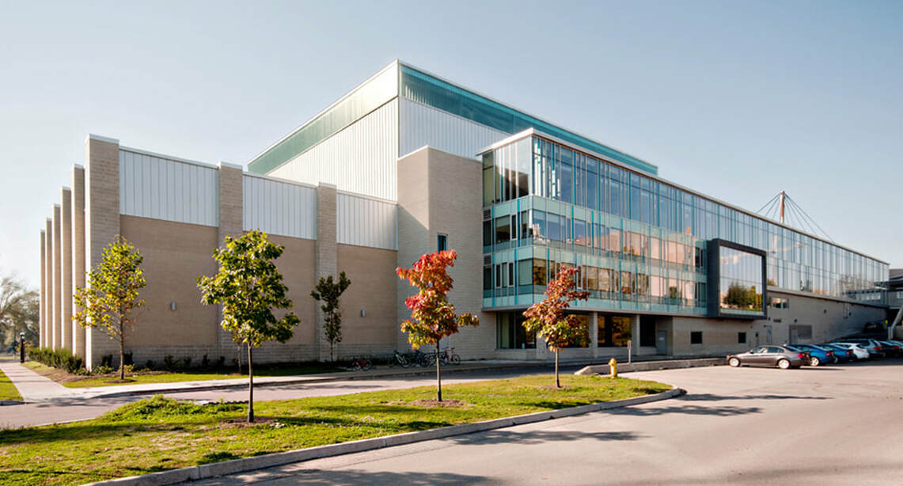

|
 |
 |
 |

|
TOP 3 Spots |
||||
|
Here are my favourite spots for others to discover on campus:
Favorite spot to eat:Lucy's Lucy's is my favorite place to eat because they have variety of choices of food to choose from. I always get their burritos and they are the best! Tastes so much better after working out from the recreation centre.
Favorite spot to study:
Taylor Library Taylor library is my favorite place to study, since they have a good atmosphere to study, and they also provides quiet area for students to focus on studying. I get lots of my work done in the Taylor library!
Favorite spot to spend time:
Western Student Recreation Centre Western Student Recreation Centres is my favorite place to spend my time on. Personally I really enjoy spending my time for self developement, so I like working out, especially with friends. They have lots of machines for students to use, and they are diverse. |
||||